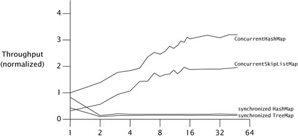

{% include JB/setup %}
{% raw %}
<div>


<a href="21021536.html" class="calibre2"></a><a name="ch11lev1sec5" class="calibre18" id="ch11lev1sec5"></a>
<h3 id="title-IDA3FOF0" class="docSection1Title">11.5. Example: Comparing Map Performance</h3>
<p class="docText1">The single-threaded performance of <tt class="calibre25">ConcurrentHashMap</tt> is slightly better than that of a synchronized <tt class="calibre25">HashMap</tt>, but it is in concurrent use that it really shines. The implementation of <tt class="calibre25">ConcurrentHashMap</tt> assumes the most common operation is retrieving a value that already exists, and is therefore optimized to provide highest performance and concurrency for successful <tt class="calibre25">get</tt> operations.</p>
<p class="docText1">The major scalability impediment for the synchronized <tt class="calibre25">Map</tt> implementations is that there is a single lock for the entire map, so only one thread can access the map at a time. On the other hand, <tt class="calibre25">ConcurrentHashMap</tt> does no locking for most successful read operations, and uses lock striping for write operations and those few read operations that do require locking. As a result, multiple threads can access the <tt class="calibre25">Map</tt> concurrently without blocking.</p>
<p class="docText1"><a class="calibre2" href="#ch11fig03">Figure 11.3</a> illustrates the differences in scalability between several <tt class="calibre25">Map</tt> implementations: <tt class="calibre25">ConcurrentHashMap</tt>, <tt class="calibre25">ConcurrentSkipListMap</tt>, and <tt class="calibre25">HashMap</tt> and <tt class="calibre25">treeMap</tt> wrapped with <tt class="calibre25">synchronizedMap</tt>. The first two are thread-safe by design; the latter two are made thread-safe by the synchronized wrapper. In each run, <span class="docEmphasis">N</span> threads concurrently execute a tight loop that selects a random key and attempts to retrieve the value corresponding to that key. If the value is not present, it is added to the <tt class="calibre25">Map</tt> with probability <span class="docEmphasis">p</span> = .6, and if it is present, is removed with probability <span class="docEmphasis">p</span> = .02. The tests were run under a pre-release build of Java 6 on an 8-way Sparc V880, and the graph displays throughput normalized to the onethread case for <tt class="calibre25">ConcurrentHashMap</tt>. (The scalability gap between the concurrent and synchronized collections is even larger on Java 5.0.)</p>
<p class="docText1">The data for <tt class="calibre25">ConcurrentHashMap</tt> and <tt class="calibre25">ConcurrentSkipListMap</tt> shows that they scale well to large numbers of threads; throughput continues to improve as threads are added. While the numbers of threads in <a class="calibre2" href="#ch11fig03">Figure 11.3</a> may not seem large, this test program generates more contention per thread than a typical application because it does little other than pound on the <tt class="calibre25">Map</tt>; a real program would do additional thread-local work in each iteration.</p>
<a name="ch11fig03" class="calibre18" id="ch11fig03"></a><p class="calibre21"><div class="calibre12">
<h5 class="docExampleTitle">Figure 11.3. Comparing Scalability of <tt class="calibre33">Map</tt> Implementations.</h5>
</div></p><p class="docText1"><div class="v8"><a target="_self" href="11fig03_alt.jpg" class="calibre2">[View full size image]</a></div></p>
<p class="calibre1"> </p>
<p class="docText1">The numbers for the synchronized collections are not as encouraging. Performance for the one-thread case is comparable to <tt class="calibre25">ConcurrentHashMap</tt>, but once the load transitions from mostly uncontended to mostly contendedwhich happens here at two threadsthe synchronized collections suffer badly. This is common behavior for code whose scalability is limited by lock contention. So long as contention is low, time per operation is dominated by the time to actually do the work and throughput may improve as threads are added. Once contention becomes significant, time per operation is dominated by context switch and scheduling delays, and adding more threads has little effect on throughput.</p>
<a href="21021536.html" class="calibre2"></a>
<p class="calibre3"> </p>

</div>

{% endraw %}

